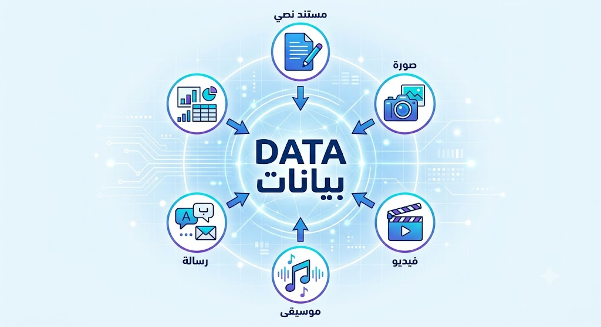
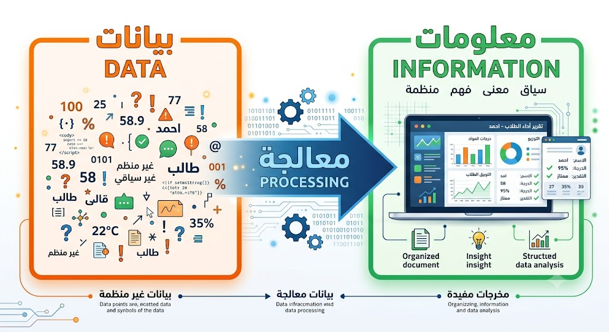
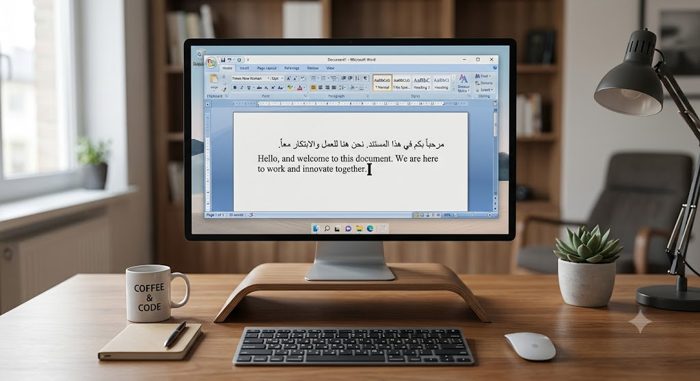
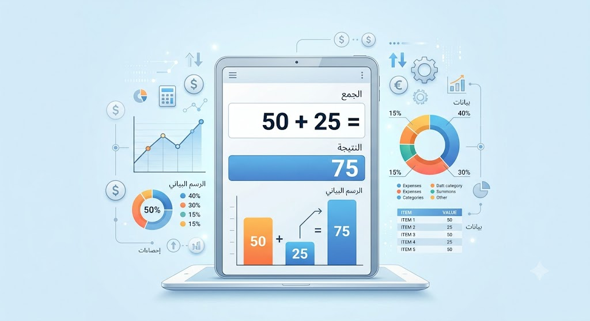
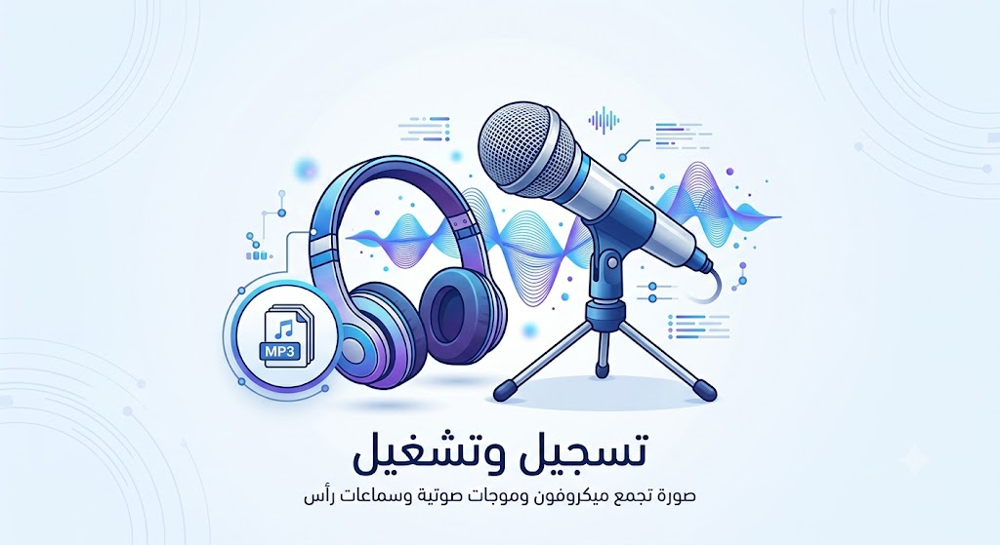
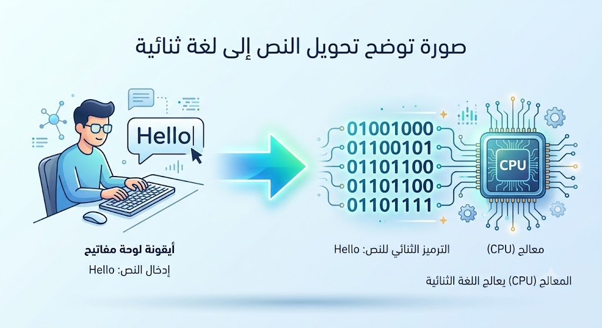
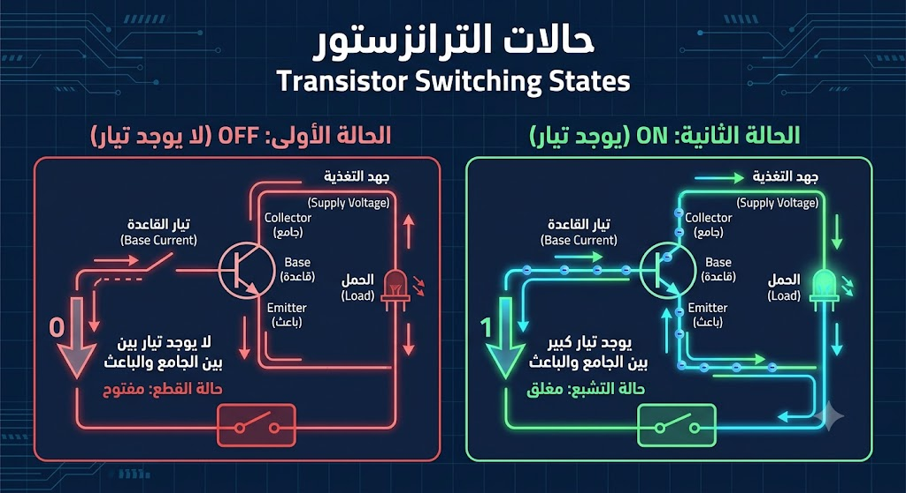
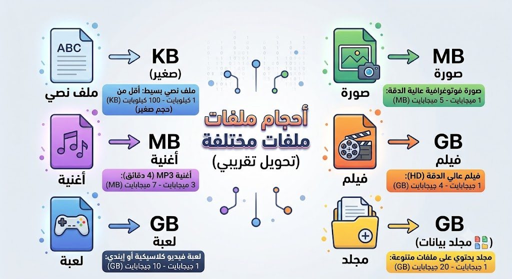
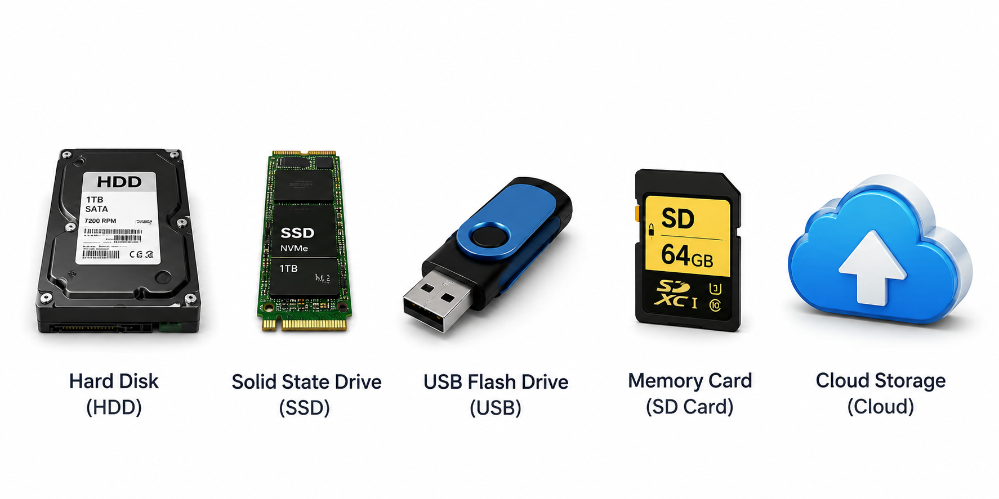

Data Inside the Computer: What Does the Computer Process?
المستوى الأول
تعرف على مفهوم البيانات، وأنواعها، وكيف يتعامل الحاسوب معها، وكيف تُقاس وتُخزن داخل الجهاز.
بعد الانتهاء من هذا الدرس ستكون قادرًا على:
عندما تستخدم الحاسوب أو الهاتف الذكي، قد تكتب رسالة، أو تلتقط صورة، أو تشاهد فيلمًا، أو تستمع إلى أغنية، أو تلعب لعبة.
بالنسبة لنا، تبدو هذه الأشياء مختلفة تمامًا؛ فالصورة ليست مثل الفيديو، والنص ليس مثل الصوت.
لكن بالنسبة للحاسوب، لا يوجد فرق كبير بينها. فالحاسوب يرى جميع هذه الأشياء على أنها بيانات (Data).
ولهذا السبب تُعد البيانات أساس عمل جميع أجهزة الحاسوب. بدون بيانات، لن يستطيع الحاسوب تنفيذ أي عملية، ولن يتمكن من تشغيل البرامج أو عرض الصور أو تشغيل الفيديوهات أو حتى كتابة حرف واحد.

(Image: Computer surrounded by icons representing document, image, video, music, and message — all pointing to the word "DATA".)
البيانات (Data): هي المادة الخام التي يعمل عليها الحاسوب. وهي مجموعة من الحقائق أو القيم أو الرموز أو الأوامر التي يستطيع الحاسوب استقبالها، أو تخزينها، أو معالجتها، أو نقلها.
كل ما يفعله الحاسوب يعتمد على البيانات. فعندما تكتب رسالة، أو تشاهد فيديو، أو تستخدم برنامجًا، أو تلعب لعبة، فإن الحاسوب يستقبل بيانات، ثم يعالجها، ثم يعرض النتائج لك.
تشبيه: يمكن تشبيه البيانات بالمواد الخام التي تدخل إلى مصنع. فكما يحتاج المصنع إلى الحديد أو الخشب لصناعة المنتجات، يحتاج الحاسوب إلى البيانات لإنتاج المعلومات والنتائج.
يخلط كثير من المبتدئين بين البيانات (Data) والمعلومات (Information)، لكن هناك فرق مهم بينهما.
هي حقائق أولية لم تتم معالجتها بعد.
مثل:
كل عنصر من هذه العناصر بمفرده لا يوضح الصورة كاملة.
هي البيانات بعد تنظيمها أو معالجتها لتصبح ذات معنى.
مثال:
حصل أحمد على 95 درجة في مادة الحاسوب عام 2026.
هنا أصبحت البيانات معلومة مفهومة.
البيانات ← المعالجة ← المعلومات
قبل التصحيح: درجات الطلاب عبارة عن بيانات.
بعد حساب المتوسط وإظهار النتيجة النهائية: تصبح معلومات.

(Image: Box labeled "Data" with an arrow "Processing" pointing to a box labeled "Information".)
لا يتعامل الحاسوب مع نوع واحد من البيانات، بل مع أنواع كثيرة. ورغم اختلافها بالنسبة لنا، فإن الحاسوب يعالجها جميعًا بالطريقة نفسها.
النصوص هي أكثر أنواع البيانات استخدامًا. وتشمل الرسائل، والكتب، والمقالات، والأكواد البرمجية، والمستندات.

(Image: A Word document with Arabic and English text and a blinking cursor.)
الأرقام هي بيانات تُستخدم في العمليات الحسابية والبرامج المختلفة. ومن أمثلتها: درجات الطلاب، أسعار المنتجات، أعمار الأشخاص، نتائج المباريات.
إذا أدخلت 50 + 25، فالأرقام التي كتبتها تُعد بيانات. أما الناتج 75 فهو معلومة نتجت بعد المعالجة.

(Image: Calculator display showing numbers and graphs.)
الصور أيضًا نوع من أنواع البيانات. قد تكون صورة شخصية، أو صورة التقطتها بالكاميرا، أو شعار شركة، أو رسمًا توضيحيًا.
ويقوم الحاسوب بتخزين الصور داخل ملفات مثل: JPG، PNG، WEBP.
(Image: Gallery of different photos displayed on a computer screen.)
الصوت هو بيانات تمثل الكلام أو الموسيقى أو أي تسجيل صوتي. مثل الأغاني، والتسجيلات الصوتية، والمكالمات، والبودكاست.
ويخزن الحاسوب الصوت في ملفات مثل: MP3، WAV، AAC.

(Image: Microphone with sound waves and headphones.)
الفيديو يجمع بين الصور المتحركة والصوت، ولذلك يكون حجمه غالبًا أكبر من الصور أو الملفات النصية.
ومن أمثلة صيغ الفيديو: MP4، AVI، MOV، MKV.
(Image: Video player showing a movie with a play bar.)
| نوع البيانات | أمثلة | الاستخدام |
|---|---|---|
| النصوص (Text) | الرسائل، الكتب، المستندات | القراءة والكتابة |
| الأرقام (Numbers) | الدرجات، الأسعار، العمليات الحسابية | الحساب والتحليل |
| الصور (Images) | الصور الشخصية والرسومات | العرض والتصميم |
| الأصوات (Audio) | الأغاني والتسجيلات | الاستماع والتواصل |
| الفيديوهات (Video) | الأفلام والدروس التعليمية | المشاهدة والتعلم |
بعد أن عرفنا أن الحاسوب يتعامل مع النصوص والصور والأصوات والفيديوهات على أنها بيانات، يبقى السؤال الأهم:
كيف يستطيع الحاسوب فهم هذه البيانات؟ هل يفهم اللغة العربية؟ هل يفهم اللغة الإنجليزية؟ هل يعرف معنى الصورة أو الفيديو؟
الحاسوب لا يفهم أي لغة بشرية كما يفهمها الإنسان، بل يعتمد على لغة خاصة به تُسمى اللغة الثنائية (Binary Language).
لغة الحاسوب هي اللغة الوحيدة التي يستطيع الحاسوب فهمها والتعامل معها. وتُعرف باسم اللغة الثنائية (Binary Language).
وسُميت "ثنائية" لأنها تعتمد على رقمين فقط: 0 و 1. ولهذا السبب تُسمى أحيانًا لغة الصفر والواحد.
قد يبدو غريبًا أن يتمكن الحاسوب من تشغيل الألعاب، وعرض الأفلام، وتشغيل الإنترنت، والذكاء الاصطناعي باستخدام رقمين فقط، لكن هذا ما يحدث بالفعل.

(Image: A person typing "Hello" on a keyboard, with the text transforming into a sequence of 0s and 1s going into the CPU.)
لفهم ذلك، يجب أن نعرف كيف يعمل الحاسوب من الداخل. يتكون الحاسوب من مليارات المكونات الإلكترونية الصغيرة جدًا تُسمى الترانزستورات (Transistors).
يمكن تشبيه الترانزستور بمفتاح كهربائي صغير جدًا. وله حالتان فقط:
وبسبب وجود هاتين الحالتين فقط، يستخدم الحاسوب رقمين فقط لتمثيلهما:
| حالة الترانزستور | القيمة الثنائية |
|---|---|
| OFF (لا يوجد تيار كهربائي) | 0 |
| ON (يوجد تيار كهربائي) | 1 |

(Image: Simple transistor illustration showing OFF = 0 and ON = 1.)
قد يحتوي المعالج الحديث على أكثر من 50 مليار ترانزستور. وكل ترانزستور يعمل كمفتاح كهربائي صغير جدًا ينتقل بين حالتي 0 و1 مليارات المرات في الثانية. ومن خلال هذا العدد الهائل من التبديلات، يستطيع الحاسوب تشغيل نظام التشغيل، والألعاب، والمتصفحات، وبرامج التصميم، وحتى تطبيقات الذكاء الاصطناعي.
مهما كان نوع البيانات، فإن الحاسوب يحولها أولًا إلى أرقام ثنائية (0 و1). هذه العملية تسمى التحويل الرقمي (Digitization).
يُحوّل كل حرف إلى قيمة رقمية وفق نظام ترميز مثل ASCII أو Unicode، ثم تُحوّل هذه القيم إلى أرقام ثنائية.
تُقسّم الصورة إلى شبكة من النقاط الصغيرة تسمى بكسلات (Pixels). كل بكسل يُحوّل إلى أرقام تمثل لونه (أحمر، أخضر، أزرق)، ثم إلى نظام ثنائي.
تُؤخذ عينات من الموجة الصوتية بفترات زمنية منتظمة (Sampling)، وتُحوّل كل عينة إلى قيمة رقمية، ثم إلى نظام ثنائي.
يتكون الفيديو من صور متتابعة (Frames) + مسار صوتي. كل إطار يُحوّل كصورة مستقلة، والصوت يُحوّل كملف صوتي منفصل، ثم يُدمج كل شيء.
جميع البرامج، سواء كانت Word، Photoshop، ألعاب، أو أنظمة تشغيل مثل Windows وLinux، تتحول بالكامل إلى تعليمات ثنائية يفهمها المعالج وينفذها.
مثال عملي: كتابة كلمة "السلام"
الحاسوب لا يقرأ الرقم "1" كما يقرأه الإنسان، ولا يعرف معنى الرقم "0". بل يتعامل معهما على أنهما حالتان كهربائيتان داخل الدوائر الإلكترونية: 0 = لا تيار، 1 = يوجد تيار.
بعد أن عرفنا أن الحاسوب يحول جميع البيانات إلى لغة ثنائية، يخطر ببالنا سؤال: كيف نقيس حجم البيانات؟
يستخدم الحاسوب وحدات خاصة لقياس حجم البيانات، تمامًا كما نستخدم المتر لقياس الطول والكيلوغرام لقياس الوزن.
Bit هي اختصار لـ Binary Digit (رقم ثنائي). وهي أصغر وحدة بيانات، ويمكن أن تأخذ قيمة واحدة فقط: 0 أو 1.
كل 8 Bits تساوي 1 Byte. وغالبًا يستطيع البايت الواحد تمثيل حرف واحد في أنظمة الترميز الشائعة.
| الوحدة | الاختصار | القيمة بالبايت | مثال تقريبي |
|---|---|---|---|
| بت | Bit | 1/8 بايت | قيمة واحدة (0 أو 1) |
| بايت | Byte | 1 بايت | حرف واحد (مثل "A") |
| كيلوبايت | KB | 1,024 بايت | صفحة نصية صغيرة |
| ميجابايت | MB | 1,024 KB | صورة عالية الجودة أو أغنية MP3 |
| جيجابايت | GB | 1,024 MB | فيلم كامل أو لعبة كبيرة |
| تيرابايت | TB | 1,024 GB | قرص صلب خارجي أو خادم |
| بيتابايت | PB | 1,024 TB | مراكز البيانات الكبيرة |

(Image: Different file icons with approximate sizes next to them.)
كل البيانات التي يتعامل معها الحاسوب تُخزن داخل وسائط التخزين (Storage Media). وهناك عدة أنواع منها، لكل نوع مميزاته واستخداماته.
يخزن البيانات على أقراص مغناطيسية دوارة. سعة تخزين كبيرة، لكنه أبطأ من SSD.
يخزن البيانات على ذاكرة فلاش إلكترونية. أسرع بكثير من HDD، وأكثر مقاومة للصدمات.
وسيط تخزين صغير محمول، يعمل بالذاكرة الفلاش. مثالي لنقل الملفات بين الأجهزة.
تُستخدم في الهواتف والكاميرات والأجهزة اللوحية لتوسيع سعة التخزين.
تخزين البيانات على خوادم بعيدة عبر الإنترنت. يمكن الوصول إليها من أي جهاز متصل بالإنترنت.

(Image: HDD, SSD, USB, SD Card, and Cloud Storage icons arranged in a row.)
عندما تحذف ملفًا من جهازك، لا تختفي بياناته فورًا. بل يعتبر نظام التشغيل أن المساحة التي كان يشغلها أصبحت متاحة لكتابة بيانات جديدة. لذلك قد تتمكن برامج استعادة الملفات من استرجاع بعض الملفات المحذوفة إذا لم تُكتب بيانات جديدة فوقها.
بعد الضغط على هذا الزر سيتم التوجيه إلى الاختبار.
أجب عن الأسئلة التالية. كل سؤال له إجابة واحدة صحيحة.